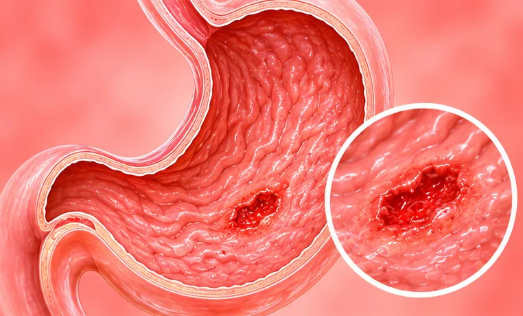

Pendarahan saluran gastrousus atas
Pendarahan di esofagus, perut atau bahagian pertama usus kecil
Apa itu
Pendarahan boleh bermula di esofagus, perut atau bahagian pertama usus kecil. Ia mungkin kelihatan sebagai muntah darah atau najis hitam, dan ia kecemasan.
- Esofagus, perut, usus
- Lebih biasa pada warga emas
- Darah dalam muntah atau najis
- Jumpa doktor
- Pergi ke hospital segera; pakar gastroenterologi
- Biasa pada
- Warga emas; orang yang ada ulser perut atau penyakit hati
- Berjangkit
- Tidak
- Perjalanan
- Perlukan rawatan hospital; hasilnya bergantung pada puncanya
Tanda biasa
Rasa hendak pengsanHampir pengsan (presinkop) 
Muka pucatPucat 
Sakit di perut atasSakit epigastrik 
Loya, rasa hendak muntahLoya
Mengapa ia berlaku

Punca belum diketahui sepenuhnyaIdiopatik
Punca lain
- Ulser di perut atau bahagian pertama usus
- Sesetengah ubat tahan sakit, dan pengambilan alkohol yang kerap
- Urat bengkak di esofagus, selalunya dengan penyakit hati
- Muntah kuat yang mengoyakkan lapisan esofagus
Jumpa doktor dahulu jika
- Muntah darah, atau muntah seperti hampas kopi: hubungi 999
- Najis hitam, melekit dan berbau busuk: ke hospital segera
- Pitam, sangat pening, jantung berdebar laju atau kulit pucat dan sejuk
- Sakit perut yang teruk
- Sebarang pendarahan semasa mengambil ubat pencair darah
Jika mana-mana berkenaan, sila jumpa doktor sebelum sesi.
Halaman ini ialah maklumat am. Sila terus mengambil ubat biasa anda dan terus berjumpa doktor.
Teruskan mengambil ubat biasa anda dan terus berjumpa doktor. Sesi kami ialah sokongan lembut dan tidak menggantikan rawatan perubatan.
Menjaga diri

Tanya ahli farmasiNasihat ahli farmasi 
Jumpa doktor untuk pemeriksaanSusulan perubatan berkala
Lebih banyak cara menjaga diri
- Jangan menunggu di rumah; pergi ke hospital atau hubungi 999
- Jangan makan atau minum sehingga doktor membenarkan
- Hadkan alkohol dan jangan merokok
Beritahu ahli terapi anda
- Ubat pencair darah
- Penyakit buah pinggang atau hati
- Penyakit jantung
- Kehamilan
Ahli terapi anda akan menyemaknya bersama anda sebelum bermula.
Soalan dan jawapan
Apakah Pendarahan saluran gastrousus atas?
Pendarahan di esofagus, perut atau bahagian pertama usus kecil. Pendarahan boleh bermula di esofagus, perut atau bahagian pertama usus kecil. Ia mungkin kelihatan sebagai muntah darah atau najis hitam, dan ia kecemasan.
Apakah tanda biasa Pendarahan saluran gastrousus atas?
Rasa hendak pengsan · Muka pucat · Sakit di perut atas · Loya, rasa hendak muntah
Mengapa Pendarahan saluran gastrousus atas berlaku?
Punca belum diketahui sepenuhnya
Bagaimana menjaga diri dengan Pendarahan saluran gastrousus atas?
Tanya ahli farmasi · Jumpa doktor untuk pemeriksaan
Bolehkah sesi AI Body Master membantu Pendarahan saluran gastrousus atas?
Sesi ialah sokongan meridian tanpa jarum yang lembut untuk kesejahteraan anda. Ia tidak merawat atau menyembuhkan Pendarahan saluran gastrousus atas dan tidak menggantikan ubat atau doktor anda. Beritahu ahli terapi anda sebelum sesi bermula.
Keadaan berkaitan
- Esofagus Barrett
- Sembelit
- Gastroenteritis virus (radang perut dan usus)
- Sumbatan usus separa
- Ketidakseimbangan bakteria usus (disbiosis)
- Sumbatan usus (obstruksi usus)
- Kekejangan usus (spasme usus)
- Fistula usus
- Disentri amuba (amebiasis usus)
- Air kencing berwarna putih
- Hepatitis C
- Sindrom Budd-Chiari (vena hati tersumbat)
Rujukan: General information based on public health sources such as Mayo Clinic, NHS, Cleveland Clinic and NCBI StatPearls.
Halaman dikemas kini: 2026-11-05